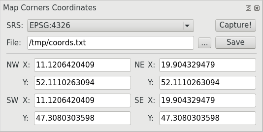

User Manual¶

Figure 1: Example for WGS-84.¶

Figure 2: Example for user-defined SRS.¶
Output¶
Example of saved plain text file:
Map Corners Coordinates
Project: webapp
SRS: EPSG:4326
NW (upper left) (X): 11.1206420409
NW (upper left) (Y): 52.1110263094
NE (upper right) (X): 19.904329479
NE (upper right) (Y): 52.1110263094
SE (bottom right) (X): 19.904329479
SE (bottom right) (Y): 47.3080303598
SW (bottom left) (X): 11.1206420409
SW (bottom left) (Y): 47.3080303598